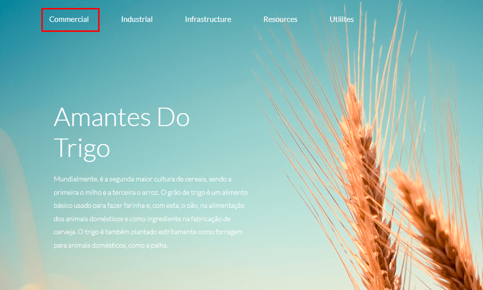
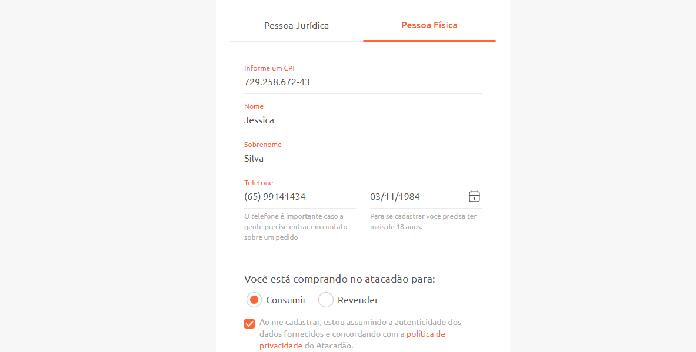
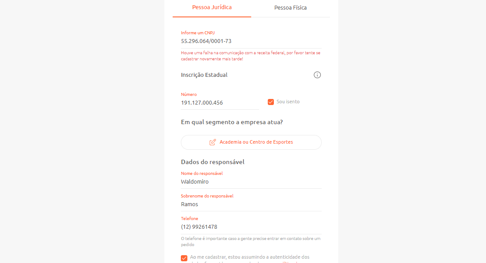

Final project — "Wheat Lovers" website (agriculture)
Scope: home page Chrome · Firefox · Edge iOS · Android
Scenario mapping
| Test Case | Complexity | Type | Test data | Automatable | Regression | Priority |
|---|---|---|---|---|---|---|
| CN0001 — Menu: validate Commercial button | Simple | Functional positive | Yes | Yes | Yes | P1 |
| CN0002 — Menu: validate Industrial button | Simple | Functional positive | Yes | Yes | Yes | P1 |
| CN0003 — Menu: validate Infrastructure button | Simple | Functional positive | Yes | Yes | Yes | P1 |
| CN0004 — Menu: validate Resources button | Simple | Functional positive | Yes | Yes | Yes | P1 |
| CN0005 — Menu: validate Utilities button | Simple | Functional positive | Yes | Yes | Yes | P1 |
| CN0006 — Home page layout | Very simple | Functional positive | Yes | Yes | Yes | P1 |
| CN0007 — Validate phone field | Simple | Functional positive | Yes | Yes | Yes | P1 |
| CN0008 — Open the site in Firefox | Very simple | Usability | Yes | Yes | Yes | P2 |
| CN0009 — Open the site in Edge | Very simple | Usability | Yes | Yes | Yes | P2 |
| CN0010 — Open the site in Chrome | Very simple | Usability | Yes | Yes | Yes | P2 |
| CN0011 — Open the site on iOS | Very simple | Usability | Yes | Yes | Yes | P2 |
| CN0012 — Open the site on Android | Very simple | Usability | Yes | Yes | Yes | P2 |
Acceptance criterion (user-story format): As a Wheat Lovers customer, I want every website feature to work correctly, so that I can access all company information and contact channels.
Sample test case in Gherkin
Scenario: CN0001 - Menu - Validate Commercial button
Given I am on the Wheat Lovers home page
When I click the Commercial button in the menu
Then the Commercial page should load
System testing — Delivery form (2 pages)
In this project I ran the full cycle: 24+ mapped scenarios, executed one by one with status and notes.
Mapping excerpt with execution results
| Scenario | Test case | Result | Notes |
|---|---|---|---|
| CN0001 — Register delivery (user/non-user) | Full flow: name, phone, address, contact preference, date, delivery window, shipping method, data agreement, submit | Passed | |
| CN0002 — Enter name | Type a name in the name field | Passed | |
| CN0003 — Enter phone (digits) | Type digits only in the Phone field | Passed | |
| CN0003.1 — Phone with special characters and letters | Type special characters and letters | Bug found | The field must not accept special characters or letters |
| CN0004 — Enter address | Type an address in the Address field | Passed | |
| CN0005 — Enter e-mail | Locate the e-mail field | Failed | There is no field labeled "Email" on the form |
| CN0006 — Contact preference: e-mail | Check "e-mail" | Passed | |
| CN0007 — Contact preference: phone | Check "phone" | Passed | |
| CN0016 — Delivery window: change selected option | Change an already-selected option | Video evidence | |
| CN0020 — Undo shipping method choice | Try to uncheck the chosen method | Video evidence | Watch video |
| CN0022 — Uncheck personal data agreement | Uncheck the data-processing agreement | Video evidence | Watch video |
Video evidence was recorded during execution — click the links above to watch.
Regression testing — Feedback page
After system changes, I mapped and executed the mandatory regression scenarios:
| Test Case | Type | Regression | Priority |
|---|---|---|---|
| CN0001 — Enter date | Functional positive | Yes | P2 |
| CN0002 — Enter score on a 10-point scale | Functional positive | Yes | P1 |
| CN0003 — Enter feedback (max. 255 characters) | Regression | Yes | P1 |
| CN0004 — Submit button | Functional positive | Yes | P1 |
| CN0005 — Submitted data screen | Regression | Yes | P1 |
| CN0008 — Submit with no data filled | Functional negative | No | P1 |
Test data (data mass)
For the sign-up tests I built test data sets for individual and business customers (names, e-mails, Brazilian CPF/CNPJ tax IDs generated with 4devs and FakeRestApi):

